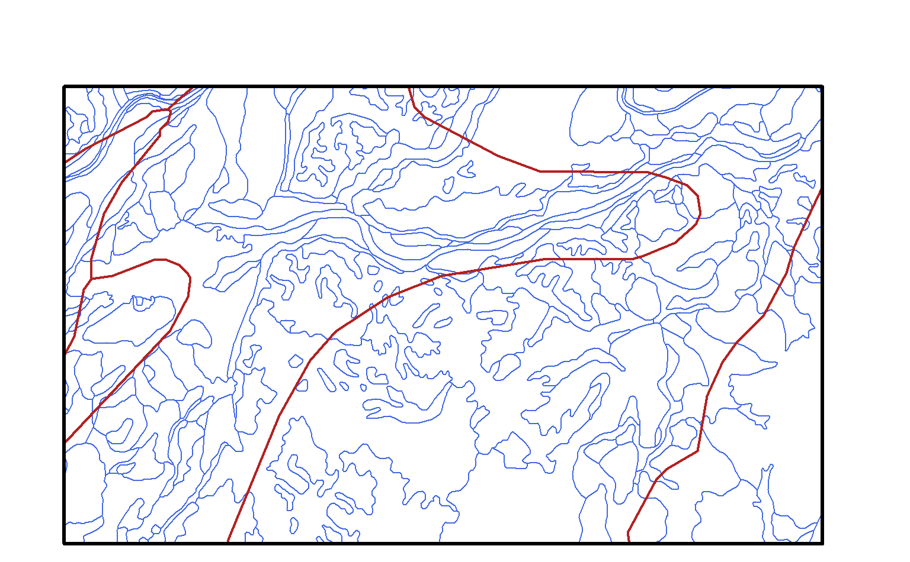

Query SDA (SSURGO / STATSGO) records via spatial intersection with supplied geometries. Input can be SpatialPoints, SpatialLines, or SpatialPolygons objects with a valid CRS. Map unit keys, overlapping polygons, or the spatial intersectionion of `geom` + SSURGO / STATSGO polygons can be returned. See details.
SDA_spatialQuery( geom, what = "mukey", geomIntersection = FALSE, db = c("SSURGO", "STATSGO") )
Arguments
| geom | a Spatial* object, with valid CRS. May contain multiple features. |
|---|---|
| what | a character vector specifting what to return. `mukey`: `data.frame` with intersecting map unit keys and names, `geom` overlapping or intersecting map unit polygons |
| geomIntersection | logical; FALSE: overlapping map unit polygons returned, TRUE: intersection of `geom` + map unit polygons is returned. |
| db | a character vector identifying the Soil Geographic Databases
(`SSURGO` or `STATSGO`) to query. Option STATSGO currently works
only in combination with |
Value
A `data.frame` if `what` is 'mukey', otherwise `SpatialPolygonsDataFrame` object.
Details
Queries for map unit keys are always more efficient vs. queries for overlapping or intersecting (i.e. least efficient) features. `geom` is converted to GCS / WGS84 as needed. Map unit keys are always returned when using what = "geom".
There is a 100,000 record limit and 32Mb JSON serializer limit, per query.
SSURGO (detailed soil survey, typicall 1:24,000 scale) and STATSGO (generalized soil survey, 1:250,000 scale) data are stored together within SDA. This means that queries that don't specify an area symbol may result in a mixture of SSURGO and STATSGO records. See the examples below and the SDA Tutorial for details.
Note
Row-order is not preserved across features in `geom` and returned object. Use `sp::over()` or similar functionality to extract from results.
See also
Author
D.E. Beaudette, A.G. Brown, D.R. Schlaepfer
Examples
# \donttest{ if(requireNamespace("curl") & curl::has_internet() & requireNamespace("sp") & requireNamespace("raster") ) { library(aqp) library(sp) library(raster) ## query at a point # example point p <- SpatialPoints(cbind(x = -119.72330, y = 36.92204), proj4string = CRS('+proj=longlat +datum=WGS84')) # query map unit records at this point res <- SDA_spatialQuery(p, what = 'mukey') # convert results into an SQL "IN" statement # useful when there are multiple intersecting records mu.is <- format_SQL_in_statement(res$mukey) # composite SQL WHERE clause sql <- sprintf("mukey IN %s", mu.is) # get commonly used map unit / component / chorizon records # as a SoilProfileCollection object # confusing but essential: request that results contain `mukey` # with `duplicates = TRUE` x <- fetchSDA(sql, duplicates = TRUE) # safely set texture class factor levels # by making a copy of this column # this will save in lieu of textures in the original # `texture` column horizons(x)$texture.class <- factor(x$texture, levels = SoilTextureLevels()) # graphical depiction of the result plotSPC(x, color='texture.class', label='compname', name='hzname', cex.names = 1, width=0.25, plot.depth.axis=FALSE, hz.depths=TRUE, name.style='center-center' ) ## query mukey + geometry that intersect with a bounding box # define a bounding box: xmin, xmax, ymin, ymax # # +-------------------(ymax, xmax) # | | # | | # (ymin, xmin) ----------------+ b <- c(-119.747629, -119.67935, 36.912019, 36.944987) # convert bounding box to WKT bbox.sp <-as(extent(b), 'SpatialPolygons') proj4string(bbox.sp) <- '+proj=longlat +datum=WGS84' # results contain associated map unit keys (mukey) # return SSURGO polygons, after intersection with provided BBOX ssurgo.geom <- SDA_spatialQuery( bbox.sp, what = 'geom', db = 'SSURGO', geomIntersection = TRUE ) # return STATSGO polygons, after intersection with provided BBOX statsgo.geom <- SDA_spatialQuery( bbox.sp, what = 'geom', db = 'STATSGO', geomIntersection = TRUE ) # inspect results par(mar = c(0,0,3,1)) plot(ssurgo.geom, border = 'royalblue') lines(statsgo.geom, lwd = 2, col = 'firebrick') lines(bbox.sp, lwd = 3) legend( x = 'top', legend = c('BBOX', 'STATSGO', 'SSURGO'), lwd = c(3, 2, 1), col = c('black', 'firebrick', 'royalblue'), horiz = TRUE, bty = 'n' ) # quick reminder that STATSGO map units often contain many components # format an SQL IN statement using the first STATSGO mukey mu.is <- format_SQL_in_statement(statsgo.geom$mukey[1]) # composite SQL WHERE clause sql <- sprintf("mukey IN %s", mu.is) # get commonly used map unit / component / chorizon records # as a SoilProfileCollection object x <- fetchSDA(sql) # tighter figure margins par(mar = c(0,0,3,1)) # organize component sketches by national map unit symbol # color horizons via awc # adjust legend title # add alternate label (vertical text) containing component percent # move horizon names into the profile sketches # make profiles wider groupedProfilePlot( x, groups = 'nationalmusym', label = 'compname', color = 'awc_r', col.label = 'Available Water Holding Capacity (cm / cm)', alt.label = 'comppct_r', name.style = 'center-center', width = 0.3 ) mtext( 'STATSGO (1:250,000) map units contain a lot of components!', side = 1, adj = 0, line = -1.5, at = 0.25, font = 4 ) }#> Warning: CRS object has comment, which is lost in output#> Warning: CRS object has comment, which is lost in output#>#>#>#>#>#>#>#>#>#>#> Warning: CRS object has comment, which is lost in output#> Warning: CRS object has comment, which is lost in output#> Warning: CRS object has comment, which is lost in output#> Warning: CRS object has comment, which is lost in output#> Warning: duplicates is set to FALSE and 'mukey' is in WHERE clause. Note: 'mukey' omitted from result.#>#>#>#>#>#>#>#>#>#># }